마음책방을 클로드 코드로 올리고 배포해요
오전에는 클로드 코드를 처음 써 보며 폴더 열기, 아티팩트 가져오기, 깃헙에 올리고 내려받기를 익혀요. 오후에는 마음책방을 깃헙 페이지스로 배포하고, 보안과 SEO를 점검해요. 마지막에는 내 파이어베이스 프로젝트를 직접 만들어 옮겨 배포하고, 3주차를 돌아보며 마쳐요.
교육 개요
| 시간 | 09:00–18:00 (점심 12:00–13:00, 수업 8시간) |
|---|---|
| 교과 | [기본] AI 서비스 개발 · 11일차 (총 18일) |
| 교육 목표 | 클로드 코드로 마음책방을 깃헙에 올리고, 깃헙 페이지스와 파이어베이스로 배포하며, 배포한 사이트의 보안과 SEO를 점검한다. |
| 수업이 끝나면 | ① 클로드 코드로 폴더를 열고, 아티팩트를 가져오고, 깃헙에 올리고 내려받기 ② 공개 저장소 조건을 알고 깃헙 페이지스로 배포하기 ③ 배포한 사이트에서 되는 기능과 안 되는 기능의 이유 말하기 ④ 보안 점검 결과를 깃헙 이슈로 남기고, SEO 다섯 가지 고치기 ⑤ 파이어베이스 프로젝트를 만들고 호스팅으로 배포하기 |
수업 전 준비
- 마음책방 아티팩트: DAY 3에 클로드 아티팩트로 만든 마음책방이 내 아티팩트 목록에 있는지 봐요. 1세션에서 클로드 코드가 이 아티팩트를 가져와요.
- 클로드 데스크톱 앱: 어제 설치한 앱이 열리고 Code 탭이 보이는지 봐요.
- 깃헙 계정: 1주차부터 쓴 깃헙 계정으로 로그인해 둬요.
- 깃·노드제이에스: 어제 4-9에서 확인한 결과를 열어 둬요. 깃은 1세션, 노드제이에스는 4세션(파이어베이스 명령 도구)에서 필요해요.
- 구글 계정: 4세션에서 파이어베이스 프로젝트를 직접 만들 구글 계정으로 로그인해 둬요.
타임테이블
| 시간 | 구분 | 내용 |
|---|---|---|
| 09:00–09:20 | 오늘의 단어 | 오늘의 단어 |
| 09:20–11:50 | SESSION 1 | 클로드 코드 처음 써 보기 |
| 12:00–13:00 | 점심 | |
| 13:00–14:00 | SESSION 2 | 깃헙 페이지스로 내 사이트 배포하기 |
| 14:00–15:40 | SESSION 3 | 배포한 사이트 점검하기: 보안과 SEO |
| 15:50–17:00 | SESSION 4 | 파이어베이스로 옮겨 배포하기 |
| 17:00–17:30 | SESSION 5 | 3주차 회고와 다음 주 예고 |
| 보충 60분 | SESSION 6 | CI/CD 맛보기: 개발 과정을 자동으로 |
| 17:30–18:00 | 정리 | 오늘 정리와 과제 |
오늘의 단어
오늘 처음 나오는 말을 먼저 짧게 짚고 시작해요. 수업 중에 다시 나오면 이 표로 돌아와요.
| 단어 | 뜻 |
|---|---|
| 깃 · 깃헙 | 깃은 내 컴퓨터에서 코드의 변경 기록을 남기는 프로그램, 깃헙은 그 기록을 올려 두는 웹사이트예요. |
| 커밋 · 푸시 | 커밋은 변경을 기록으로 남기기, 푸시는 그 기록을 깃헙에 올리기예요. |
| 퍼블릭 · 프라이빗 | 저장소를 누구나 볼 수 있게(공개) 둘지, 허락한 사람만 보게(비공개) 둘지예요. |
| .gitignore | 깃헙에 올리지 않을 파일 목록. 키가 든 파일을 여기에 적어 빼요. |
| 깃헙 페이지스 | 저장소의 파일을 그대로 웹사이트로 보여 주는 깃헙의 무료 기능 |
| CI/CD | 코드를 올리면 자동으로 검사(CI)하고 배포(CD)하는 흐름 |
| 깃헙 액션 | 깃헙에서 CI/CD 같은 자동 과정을 실행해 주는 기능. 기록은 Actions 탭에 남아요. |
| 파이어베이스 호스팅 | 구글 파이어베이스의 웹사이트 배포 기능. 주소는 프로젝트이름.web.app이에요. |
| 클론 | 깃헙에 있는 저장소를 내 컴퓨터 폴더로 그대로 복사해 오는 것 |
| CLAUDE.md | 클로드 코드가 세션을 시작할 때마다 먼저 읽는 규칙 파일. 커밋 메시지 규칙 같은 것을 적어 둬요. |
| Remote Control | 내 컴퓨터에서 하던 클로드 코드 세션을 휴대폰이나 다른 브라우저에서 이어서 보는 기능 |
| 깃헙 이슈 | 저장소에 할 일과 문제를 남기는 게시판. 고치면 닫아요. |
| SEO | 검색엔진과 메신저가 내 사이트를 잘 알아보게 만드는 일. 제목·설명·썸네일·파비콘·언어 표시를 챙겨요. |
| 캐시 | 한 번 본 정보를 저장해 두고 다시 쓰는 것. 고쳤는데 옛날 모습이 보이면 캐시 때문일 수 있어요. |
| 스파크 요금제 | 파이어베이스의 무료 요금제. 정해진 양까지 호스팅·데이터베이스를 무료로 써요. |
수업을 시작하기 전에 두 가지를 스스로 답해 봐요. 고를 영역은 비즈니스 문제와 솔루션 정의, 디자인·UXUI, 개발과 자동화 세 가지예요.
- 나는 어떤 영역에 더 관심이 있나요?
- 현실적으로 지금, 또는 수료 후 6개월 안에 내 강점은 어디에 가까운가요?
오늘은 '개발과 자동화'에 가까운 날이에요. 내 관심 영역과 다르더라도, 기획자가 개발 흐름을 알면 일정과 위험을 판단할 수 있어요.
클로드 코드 처음 써 보기
오늘부터는 클로드 데스크톱 앱의 Code 탭(클로드 코드)을 주로 써요. 내 컴퓨터 폴더를 열고, 파일을 가져오고, 깃헙에 올리고 내려받는 것까지 작은 실습으로 하나씩 손에 익혀요.
실습1-1. 클로드 코드 첫 화면과 작업 폴더 고르기
클로드 데스크톱 앱을 열고 왼쪽 위의 [Code] 탭(</> 모양)을 눌러요.
왼쪽 위 [새로 만들기]를 눌러 새 세션을 열어요. 왼쪽에는 지난 세션 목록, 가운데 아래에는 입력창이 보여요.
입력창 아래에서 환경은 [이 컴퓨터]로 두고, 폴더 칸을 눌러 작업할 폴더를 골라요. 새로 만들 때는
hello_page_오늘날짜처럼 날짜를 붙여 이름을 지어요.
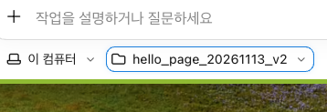
확인할 점
- 입력창 아래에 [이 컴퓨터]와 내가 고른 폴더 이름이 보인다
막히면
| 이렇게 보이면 | 이렇게 해요 |
|---|---|
| Code 탭을 못 찾겠어요 | 데스크톱 앱 왼쪽 위를 봐요. 채팅 모양 아이콘 옆의 </> 모양이 Code 탭이에요. |
실습1-2. 아티팩트를 내 폴더로 가져오기
DAY 3에 클로드 아티팩트로 마음책방을 만들었던 것 기억하시나요? 클로드 코드는 내 아티팩트를 찾아서 지금 폴더에 파일로 저장할 수 있어요.
요청: 내가 최근에 작업한 마음책방 마지막 버전 아티팩트를 이 폴더로 가져와 줘. 내용: 여기서 이어서 작업할 거야. 파일 이름은 index.html로 해 줘. 형식: ① 가져온 아티팩트 이름과 수정 날짜 ② 저장한 파일 ③ 지금 들어 있는 기능을 한 줄씩.
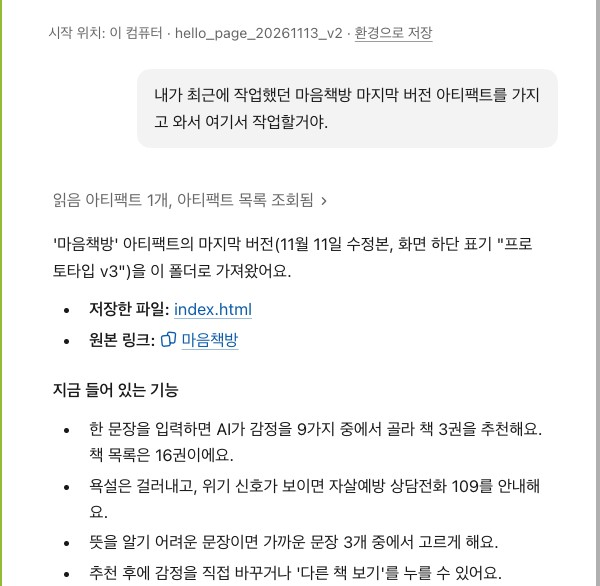
맥은 Finder, 윈도우는 파일 탐색기에서 그 폴더를 직접 열어요.
index.html 파일 한 개가 사본으로 저장되어 있는지 눈으로 확인해요.
실습1-3. 파일을 열어 보고, 코드에 댓글 달기
클로드의 답에 나온 파일 이름(index.html)을 누르면 오른쪽에 파일을 고칠 수 있는 화면이 열려요.
처음 열면 '자동 저장 켜짐' 안내가 나와요. 이 화면에서 고친 내용은 바로 파일에 저장돼요. 끄려면 안내가 가리키는 메뉴를 열고 [자동 저장]을 해제해요.
궁금한 줄을 골라 댓글을 달아 봐요. 댓글은 다음 질문 때 클로드가 함께 읽는 내용(컨텍스트)으로 쓰여요. 예: 색이 정해진 줄에 "이 색을 더 따뜻하게 바꾸고 싶어".
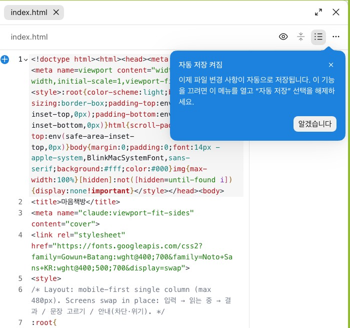
실습1-4. 환경 메뉴와 리모트 컨트롤 확인하기
오른쪽 위의 사이드 메뉴 버튼(목록 모양)을 눌러 [환경]을 봐요. 지금 세션이 어느 컴퓨터의 어느 폴더에서 일하는지 나와요.
같은 곳에 [Remote Control] 스위치가 있어요. 켜면 내 컴퓨터에서 하던 클로드 코드 세션을 휴대폰이나 다른 브라우저에서 이어서 볼 수 있어요.
설정에서도 확인해요. 왼쪽 아래 설정 → [Claude Code] → Remote Control 항목이 켜져 있는지 봐요.
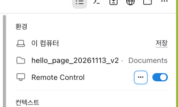
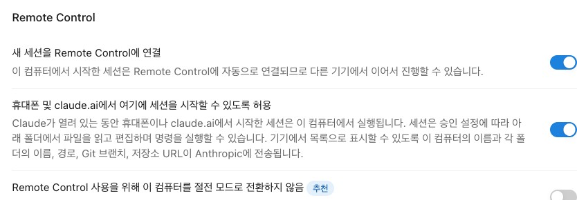
막히면
| 이렇게 보이면 | 이렇게 해요 |
|---|---|
| Remote Control 항목이 없거나 켜지지 않아요 | 회사·기관 계정(Team·Enterprise)은 조직 관리자(Owner)가 먼저 켜 줘야 해요. 관리자가 켠 뒤 앱을 다시 열어 확인해요. |
| '조직에서 비활성화되었다'는 안내가 나와요 | 같은 이유예요. 조직 관리자가 켜 주면 바로 쓸 수 있어요. 켜졌다는 안내를 받으면 설정 화면을 다시 열어 스위치를 확인해요. |
출처: Claude Code 공식 문서 Remote Control("On Team and Enterprise, an Owner must first enable the Remote Control toggle") (2026-11-13 확인)
실습1-5. 명령은 클로드 코드에게 맡기기: 깃 설치부터
클로드 코드는 터미널 명령을 직접 실행하고, 그 결과를 읽어서 다음 일을 이어 가요. 먼저 "어떻게 하면 돼?"라고 물어보고, 필요한 것을 맡겨요.
요청: 지금 이 폴더의 소스코드를 내 깃헙에 올리고 싶어. 어떻게 해야 할까? 내용: 나는 개발을 모르는 기획자야. 내 컴퓨터에 깃과 깃헙 로그인이 되어 있는지 먼저 확인해 줘. 형식: ① 확인한 결과 ② 올리는 순서 ③ 내가 정해야 할 것을 한 줄씩.
요청: 깃부터 설치해 줘. 내용: 깃헙은 내가 만든 저장소에 연결할 거야. 설치 명령은 실행하기 전에 보여 줘. 형식: 실행할 명령과, 설치가 끝났는지 확인한 결과를 한 줄씩.
명령을 실행하기 전에 클로드 코드가 승인을 물어요. 무엇을 하는 명령인지 읽고 승인해요.
클로드 코드가 명령을 알려 줄 때는 답 안에 명령이 카드처럼 따로 보여요(예: cd …, git …). 카드 오른쪽의 ▶ 실행 버튼을 누르면 그 명령이 실행되고, 결과가 카드 바로 아래에 나와요. 카드가 두 개 이상이면 위에서부터 하나씩 눌러요. 결과를 클로드에게 다시 묻지 않아도, 클로드 코드가 그 결과를 읽고 다음 일을 이어 가요.
실습1-6. 새 비공개 저장소에 올리고, 결과 링크 열어 보기
[새로 만들기]로 새 세션을 열고, 1-1의 폴더를 다시 골라요.
요청: 이 폴더의 index.html을 내 깃헙에 새 비공개 저장소로 만들어서 올려 줘. 내용: 저장소 이름은 maum-bookstore-[오늘 날짜]로 해 줘. 키·토큰 같은 비밀 값은 올리지 마. 형식: ① 저장소 주소 ② 올린 파일과 커밋 메시지를 한 줄씩.
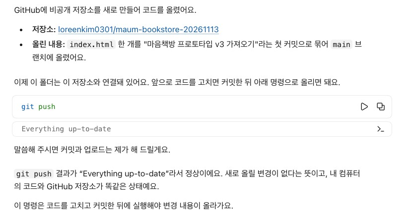
답에 나온 저장소 링크를 눌러요. 클로드 앱 안의 내장 브라우저로 열려요.
같은 링크를 크롬 같은 바깥 브라우저의 새 탭에서도 열어요.
두 화면을 비교해요. 비공개 저장소라서 깃헙에 로그인한 브라우저에서만 코드가 보이고, 로그인하지 않은 브라우저에서는 404(찾을 수 없음) 화면이 나와요.
정말 올라갔는지는 깃헙 화면으로 확인해요
깃헙에서 저장소 첫 화면을 열어요. 파일 목록 위쪽 오른편에 마지막 커밋 메시지와 언제 올렸는지(예: 21분 전)가 보여요.
시각에 마우스를 올리면 정확한 날짜와 시간이 나와요. 방금 올린 시각과 맞는지 일시까지 확인해요.
클로드 코드에게 한 번 더 물어봐요.
요청: 현재 최신 코드가 깃헙에 잘 반영되었는지 한 번 더 푸시해서 확인해 줘. 내용: 새로 올릴 변경이 없으면 그렇다고 알려 줘. 형식: ① 실행한 명령 ② 결과 ③ 그 결과가 무슨 뜻인지 한 줄씩.
결과에 Everything up-to-date가 나오면, 새로 올릴 변경이 없고 내 컴퓨터의 코드와 깃헙 저장소가 똑같다는 뜻이에요.
확인할 점
- 깃헙에서 저장소가 Private으로 보이고 index.html이 올라가 있다
- 로그인 여부에 따라 같은 링크가 다르게 보인다는 것을 설명할 수 있다
실습1-7. 깃헙 저장소를 내 컴퓨터로 내려받기(클론)
반대 방향도 해 봐요. 깃헙에 있는 코드를 내 컴퓨터 폴더로 그대로 복사해 오는 것을 클론이라고 해요.
요청: [저장소 주소]를 내 컴퓨터로 클론해 줘. 내용: 이 폴더 안에 저장소 이름으로 새 폴더를 만들어 받아 줘. 형식: ① 받은 폴더 위치 ② 받은 파일 목록을 한 줄씩.
Finder나 파일 탐색기에서 그 폴더를 열고, 깃헙과 같은 파일이 있는지 확인해요.
막히면
| 이렇게 보이면 | 이렇게 해요 |
|---|---|
| 로그인·권한 오류로 클론이 안 돼요 | 클로드 코드에게 "깃헙에 로그인하는 방법을 알려 줘. 토큰은 대화창에 붙여 넣지 않을게"라고 물어요. 깃헙 로그인 도구(GitHub CLI) 설치를 권하면 승인하고, 브라우저가 열리면 내 계정으로 로그인해요. 토큰을 쓰라고 하면 깃헙에서 토큰을 만들어 대화창이 아니라 터미널이 묻는 칸에만 넣어요. |
실습1-8. 커밋 메시지를 내가 읽을 수 있게 규칙 정하기
깃헙 저장소 화면의 파일 옆에는 마지막 커밋 메시지와 날짜가 보여요. 이 두 가지로 "언제, 무엇이 바뀌었는지"를 확인해요. 그래서 커밋 메시지는 내가 읽고 바로 알 수 있어야 해요.
요청: 앞으로 이 폴더에서 커밋할 때 쓸 커밋 메시지 규칙을 정해서 CLAUDE.md에 저장해 줘. 내용: 한국어로, 무엇을 왜 바꿨는지 한 줄로 써 줘. 예: "첫 화면 제목 글자 크게: 휴대폰에서 잘 안 보여서". 영어 약어(feat, fix)는 쓰지 마. 형식: ① 저장한 규칙 ② 이 규칙으로 쓴 예시 커밋 메시지 2개.
CLAUDE.md는 클로드 코드가 세션을 시작할 때마다 먼저 읽는 규칙 파일이에요. 한 번 적어 두면 새 세션에서도 같은 규칙으로 커밋해요.
출처: Claude Code 공식 문서 Memory(CLAUDE.md)("Claude reads them at the start of every session") (2026-11-13 확인)
결과1-9. 결과
이렇게 보이면 성공깃헙 저장소 파일 옆에 내가 읽을 수 있는 커밋 메시지와 날짜가 보인다
깃헙 페이지스로 내 사이트 배포하기
오전에 비공개 저장소에 올린 마음책방을 공개 저장소로 바꾸고, 깃헙 페이지스로 누구나 열 수 있는 주소를 만들어요. 배포된 사이트에서 무엇이 되고 무엇이 안 되는지도 직접 확인해요.
개념2-1. 페이지를 배포하는 방법 떠올리기
지금까지 써 본 도구 가운데 페이지를 배포할 수 있는 방법을 떠올려 봐요.
| 방법 | 특징 |
|---|---|
| 구글 AI 스튜디오 | 앱을 만든 곳에서 바로 배포해요. 기본 배포처는 구글 클라우드예요. |
| 네트리파이 · 버셀 · 볼트 | 파일이나 저장소를 연결하면 주소를 만들어 줘요. |
| 구글 앱스 스크립트 | 시트와 붙은 작은 웹 앱을 배포해요. |
| 깃헙 페이지스 | 저장소의 파일을 그대로 웹사이트로 보여 주는 무료 기능이에요. 이번 세션에서 써요. |
| 파이어베이스 호스팅 | 구글의 웹사이트 배포 기능이에요. 4세션에서 옮겨 가요. |
파일이 하나뿐인 HTML이라면 이런 순서로도 배포할 수 있어요. ① 마음책방 HTML 파일 준비 → ② 구글 AI 스튜디오의 앱 만들기 화면에 넣기 → ③ "이 앱을 깃헙에 연결해서 깃헙 페이지스로 배포해 줘"라고 요청 → ④ AI 스튜디오의 깃헙 연결로 저장소에 올리기 → ⑤ 저장소에서 깃헙 페이지스 켜기. 다만 AI 스튜디오는 원래 화면과 서버가 있는 앱을 만들어 구글 클라우드에 올리는 도구라서, 2-5의 참고 상자에 나오는 일을 겪을 수 있어요.
출처: Google AI for Developers Build apps in Google AI Studio(깃헙 저장소 연결 two-way sync, Cloud Run 배포) (2026-11-13 확인)
개념2-2. 클로드 코드에게 배포 방법 묻기
오전에 마음책방을 올린 폴더를 클로드 코드로 열고 물어봐요.
요청: 지금 이 소스코드가 깃헙에 올라가 있는데, 내 페이지를 깃헙 페이지스로 배포하는 방법을 알려 줘. 내용: 나는 개발을 모르는 기획자야. 지금 저장소가 공개인지 비공개인지 먼저 확인해 줘. 형식: ① 지금 저장소 상태 ② 배포 순서 ③ 내가 깃헙 화면에서 눌러야 할 것을 한 줄씩.
클로드 코드는 이런 조건을 알려 줘요. 실제 규칙과 같아요.
| 확인할 것 | 내용 |
|---|---|
| 무료 계정에서 쓰는 조건 | 깃헙 무료 계정은 공개(Public) 저장소에서만 깃헙 페이지스를 쓸 수 있어요. 비공개 저장소에서 쓰려면 GitHub Pro 같은 유료 요금제가 필요해요. |
| 공개라는 뜻 | 사이트 주소를 아는 사람뿐 아니라, 저장소의 코드 전체를 누구나 볼 수 있어요. 키나 개인정보를 넣으면 그대로 드러나요. |
출처: GitHub Docs What is GitHub Pages?("GitHub Pages is available in public repositories with GitHub Free and GitHub Free for organizations") (2026-11-12 확인)
실습2-3. 공개로 바꾸기 전에 확인하고, 저장소를 퍼블릭으로 바꾸기
STEP 1. 공개되면 안 되는 것이 없는지 확인
| 구분 | 예 | 공개해도 되나요? |
|---|---|---|
| 화면과 기능 코드 | index.html, 그림, 글꼴 설정 | 돼요 |
| 비밀 값 | API 키, 토큰, .env 파일 | 절대 안 돼요 |
| 개인정보 | 실제 사람의 이름·연락처가 든 데이터 | 안 돼요 |
요청: 이 저장소를 공개로 바꾸기 전에, 공개되면 안 되는 것이 들어 있는지 찾아 줘. 내용: API 키, 토큰, .env 파일, 실제 개인정보를 찾아 줘. 지난 커밋 기록에 남아 있는 것도 봐 줘. 형식: ① 찾은 것 목록(없으면 '없음') ② 공개해도 되는지 한 줄 결론.
STEP 2. 저장소를 퍼블릭으로 바꾸기
깃헙에서 마음책방 저장소를 열고 [Settings]를 눌러요.
맨 아래 'Danger Zone'에서 [Change visibility]를 눌러요.
[Make public]을 고르고, 안내를 읽은 뒤 확인 버튼을 눌러요.
저장소 이름 옆 표시가 Private에서 Public으로 바뀌었는지 봐요.
출처: GitHub Docs Setting repository visibility(Settings > Danger Zone > Change visibility) (2026-11-13 확인)
실습2-4. 깃헙 페이지스 연결해서 내 사이트 배포하기
마음책방 저장소에서 [Settings]를 누르고, 왼쪽 메뉴에서 [Pages]를 눌러요.
Build and deployment의 Source에서 [Deploy from a branch]를 골라요.
Branch를 [main], 폴더를 [/(root)]로 고르고 [Save]를 눌러요.
1~2분 뒤 새로고침하면 위쪽에 'Your site is live at …' 주소가 나와요. [Visit site]를 눌러 열어요.
깃헙에는 [Settings]가 두 곳에 있어요. 오른쪽 위 내 프로필 사진 → [Settings] → [Pages]는 계정 설정이라 여기서는 배포할 수 없어요. 내 저장소 → [Settings] → [Pages]로 들어가야 해요.
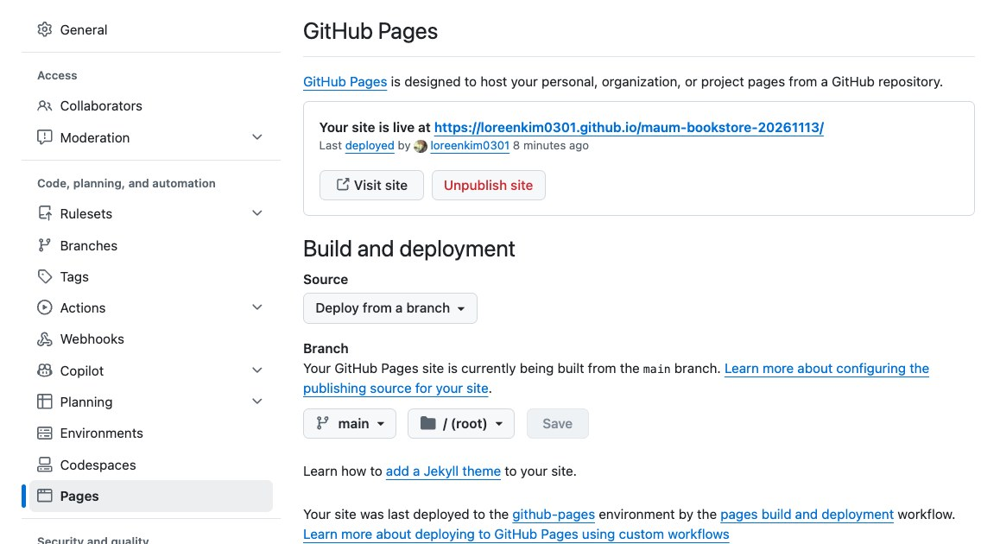
막히면
| 이렇게 보이면 | 이렇게 해요 |
|---|---|
| Pages 화면에 배포 칸이 없어요 | 프로필 쪽 설정에 들어가 있을 수 있어요. 위 참고 상자처럼 저장소의 [Settings]로 다시 들어가요. |
| 주소는 열리는데 빈 화면이에요 | 깃헙 페이지스에 올리려면 한 번 더 맞춰야 하는 앱일 수 있어요. 아래 참고 상자를 보고, 클로드 코드에게 "이 앱을 깃헙 페이지스에서 열리게 맞춰 줘"라고 물어요. |
| 404 화면이 나와요 | 저장소 맨 위에 index.html이 있는지 봐요. 다른 폴더 안에 있으면 클로드 코드에게 위치를 맞춰 달라고 해요. |
출처: GitHub Docs Configuring a publishing source(Settings > Pages > Deploy from a branch > Save) (2026-11-12 확인)
실습2-5. 되는 기능과 안 되는 기능 확인하기
배포된 주소에서 마음책방을 직접 써 봐요. 되면 되는 이유를, 안 되면 안 되는 이유를 확인해요. 기능뿐 아니라 디자인이 깨진 곳도 봐요.
| 해 본 것 | 됐나요? | 왜 그런가요? |
|---|---|---|
| 첫 화면이 열린다 | ||
| 감정 문장을 넣고 책 추천을 받는다 | ||
| 휴대폰 너비에서도 글자와 버튼이 잘 보인다 |
요청: 깃헙 페이지스 주소에서 [안 되는 기능]이 안 돼. 왜 안 되는지 알려 줘. 내용: 내 컴퓨터에서 열었을 때와 무엇이 다른지도 비교해 줘. 아직 고치지는 마. 형식: ① 안 되는 이유 ② 고치려면 필요한 것을 한 줄씩.
예를 들어 DAY 3에 만든 마음책방은 클로드 아티팩트 안에서만 AI를 불러요. 깃헙 페이지스에서 감정 문장을 넣으면 화면 위에 "AI를 쓸 수 없어 간단 추천으로 보여 드려요."가 뜨고, 감정 단어로 찾는 간단 추천으로 동작해요. 이 단계에서는 자연스러운 동작이고, 배포가 깨진 것이 아니에요. AI까지 붙이는 방법은 4주차에 배워요.
AI 스튜디오에서 만든 앱은 원래 구글 클라우드에 올리도록 만들어져 있어요. 깃헙 페이지스는 그 기본 배포처가 아니에요. 그래서 깃헙 페이지스에 올리려면 맞추는 작업이 필요해요. 강사가 직접 해 본 결과예요.
| 해 본 것 | 뜻 |
|---|---|
| AI 스튜디오가 만든 코드 그대로 | 화면과 서버가 같이 있는 앱이에요. 서버와 키가 함께 돌아가는 구글 클라우드가 기본 배포처예요. |
| 깃헙 페이지스에 처음 올렸더니 빨간 X | 기본 배포처가 아닌 곳에 올려서, 맞추는 작업이 필요했어요. |
| 오류 기록을 클로드에게 보여 주고 고쳐서 다시 올렸더니 초록 체크 | 오류가 나도 기록을 보여 주면 AI가 고칠 수 있어요. |
| 공개 주소에서 화면은 열려요 | 깃헙 페이지스는 화면만 올려 주는 곳이에요. 서버가 하던 일(AI 추천, 관리자 저장)은 여기서 동작하지 않아요. |


출처: 강사 시연 저장소 aipm-maumlibrary-251112 Actions(첫 배포 실패 → 고친 뒤 성공) · 같은 저장소의 .env.example(AI 스튜디오가 실행할 때 키를 넣어 줌, 주소는 Cloud Run 서비스) (2026-11-12 확인)
메모 · 바이브코딩 도구는 저마다 '기본 세트'가 있어요
AI 스튜디오, 볼트(Bolt) 같은 도구는 앱을 만들 때 쓰는 재료와 올리는 곳이 정해져 있어요. 이걸 기본 스택이라고 불러요. 기본 스택 안에서는 버튼 하나로 배포까지 이어져요.
| 기본으로 갖고 있는 것 | 구글 AI 스튜디오 | 볼트(Bolt) |
|---|---|---|
| 화면 | 리액트(React) | 요청에 맞춰 골라요. 간단한 화면은 보통 Vite + React로 만들어요 |
| 서버 | 있어요(Node.js) | 필요하면 만들어요 |
| 데이터 저장 | 문서에 기본값으로 적혀 있지 않아요 | 필요하면 볼트 데이터베이스를 자동으로 만들어요 |
| 키 보관 | 제미나이 키를 서버 쪽 비밀 값으로 자동 설정해요. 화면 코드에는 들어가지 않아요 | 이번에 확인한 볼트 도움말에는 적혀 있지 않아요 |
| 올리는 곳(배포처) | 구글 클라우드(Cloud Run) | 볼트 호스팅(새 프로젝트 기본값). 설정에서 네트리파이로 바꿀 수 있어요 |
기본 스택을 바꾸는 것도 프롬프트로 요청할 수 있어요. 예를 들어 "깃헙 페이지스에 올리게 바꿔 줘", "데이터는 수파베이스에 저장해 줘"처럼요. 다만 이런 일이 생길 수 있어요.
| 바꾸면 생길 수 있는 일 | 뜻 |
|---|---|
| 처음 배포가 실패해요 | 기본 배포처에 맞춰 만든 코드라서, 새 곳에 맞추는 작업이 필요해요. 위의 빨간 X가 그 예예요. |
| 되던 기능이 안 돼요 | 깃헙 페이지스, 네트리파이처럼 화면만 올리는 곳에는 서버가 없어요. AI 추천, 저장 같은 서버 기능이 멈춰요. |
| 키를 다시 넣어야 해요 | 기본 배포처가 자동으로 넣어 주던 키를 내가 새 곳의 비밀 값 칸에 직접 넣어야 해요. 키를 화면 코드에 넣으면 누구나 볼 수 있어요. |
| 되돌리기 어려워요 | 볼트는 이미 만든 볼트 데이터베이스를 수파베이스로 옮기는 공식 방법이 없다고 안내해요. 처음에 정해야 해요. |
| 도구 안에서 고치기 어려워져요 | 기본 세트를 벗어날수록 그 도구의 미리보기·배포 버튼이 그대로 동작하지 않을 수 있어요. 그다음부터는 클로드 코드 같은 도구에서 고쳐요. |
그래서 기획자는 처음에 "어디에 올릴지, 서버와 저장이 필요한지"를 먼저 정해요. 정하지 않으면 도구의 기본 세트대로 만들어져요.
출처: Google AI for Developers Build apps in Google AI Studio("React is the default", Node.js 서버, 키는 서버 쪽 비밀 값, Cloud Run 배포) · Bolt 도움말 Deploy("All new Bolt projects are published using Bolt hosting by default", 네트리파이 전환) · Database(볼트 데이터베이스 자동 생성, 수파베이스로 옮기는 방법 없음) · DeployHQ Bolt 배포 가이드(화면 프레임워크 선택, 간단한 화면은 Vite + React, 2026-06-17 갱신) (모두 2026-11-13 확인) · 강사 시연 저장소(위 캡처)
실습2-6. 마지막에 클로드 코드로 더블체크하기
요청: 현재 내 소스코드가 깃헙 페이지스로 배포가 잘 되어 있는지 확인해 줘. 내용: 배포된 주소, 마지막 배포 시각, 저장소의 마지막 커밋이 같은 내용인지 비교해 줘. 형식: ① 배포 주소 ② 마지막 배포 시각과 커밋 메시지 ③ 잘 되었는지 한 줄 결론.
오전 1-8에서 정한 커밋 메시지 규칙 덕분에, 마지막 커밋 메시지만 읽어도 지금 사이트에 무엇이 나가 있는지 알 수 있어요.
개념2-7. 올리면 저절로 배포돼요: CI/CD
코드를 고쳐서 깃헙에 올리면, 따로 누르지 않아도 1~2분 뒤 사이트가 바뀌어요. 깃헙 액션(Actions)이 저절로 배포해 주기 때문이에요. 이 흐름을 CI/CD라고 불러요.
| 말 | 뜻 |
|---|---|
| CI (지속적 통합) | 코드를 올릴 때마다 자동으로 합치고 검사해요. |
| CD (지속적 배포) | 검사를 통과하면 자동으로 사이트에 내보내요. 깃헙 페이지스가 하는 일이에요. |
| 깃헙 액션 | 깃헙에서 이 자동 과정을 실행해 주는 기능이에요. 저장소 위쪽 [Actions] 탭에 기록이 남아요. |
| 자동이 아니면 | 생기는 일 |
|---|---|
| 매번 손으로 올려야 해요 | 고칠 때마다 파일을 골라 서버에 올리는 일을 반복해요. |
| 깜빡하면 코드와 화면이 달라요 | 저장소에는 고친 코드가 있는데 사이트는 옛날 그대로예요. |
| 누가 언제 무엇을 배포했는지 몰라요 | 문제가 생겨도 어느 변경 때문인지 찾기 어려워요. 액션 기록에는 커밋·시간·결과가 남아요. |
출처: GitHub Docs Configuring a publishing source("Your GitHub Pages site will always be deployed with a GitHub Actions workflow run.") (2026-11-12 확인)
결과2-8. 결과
이렇게 보이면 성공저장소 → Settings → Pages에 'Your site is live at' 주소가 보이고, 그 주소에서 마음책방이 열린다
배포한 사이트 점검하기: 보안과 SEO
누구나 열 수 있는 주소가 생겼으니, 이제 기획자가 챙겨야 할 두 가지를 클로드 코드에게 물어봐요. 기본 보안과, 검색·공유에 보이는 모습(SEO)이에요. 찾은 문제는 바로 다 고치지 않고 깃헙 이슈에 목록으로 남겨요.
실습3-1. 기본 보안 사항 물어보고, 깃헙 이슈로 남기기
요청: 이 사이트가 공개된 상태에서 기본적으로 챙겨야 할 보안 사항을 점검해 줘. 내용: 키·토큰 노출, 사용자가 입력하는 칸, 바깥에서 불러오는 파일을 봐 줘. 지금 바로 고치지 말고, 찾은 것을 이 저장소의 깃헙 이슈에 하나씩 목록으로 올려 줘. 형식: ① 찾은 항목과 위험도(높음·보통·낮음) ② 만든 이슈 링크를 한 줄씩.
깃헙 저장소의 [Issues] 탭을 열어 이슈가 올라왔는지 봐요.
이슈 하나를 열어, 무엇이 문제이고 어떻게 고치면 되는지 내가 읽고 이해할 수 있는지 확인해요.
개발자들은 깃헙을 코드 보관함으로만 쓰지 않아요. 할 일과 문제를 이슈로 남기고, 고치면 닫는 프로젝트 관리 도구로도 써요. 기획자도 이슈를 읽고 남길 수 있어야 해요.
확인할 점
- 저장소 Issues 탭에 보안 점검 항목이 이슈로 올라와 있다
실습3-2. SEO와 공유 미리보기 물어보기
SEO는 검색엔진과 메신저가 내 사이트를 잘 알아보게 만드는 일이에요. 기획자가 먼저 챙길 것은 다섯 가지예요.
| 항목 | 어디에 보이나요? |
|---|---|
| 썸네일 이미지 | 카카오톡·슬랙에 링크를 공유했을 때 뜨는 큰 그림 |
| 파비콘 | 브라우저 탭 제목 옆의 작은 아이콘 |
| 웹사이트 제목 | 브라우저 탭과 검색 결과의 제목 |
| 웹사이트 설명 | 검색 결과와 공유 미리보기의 설명 글 |
| 언어 표시 | 화면에는 안 보이지만, 이 페이지가 한국어라는 표시 |
요청: 마음책방의 SEO와 공유 미리보기를 점검하고 고쳐 줘. 내용: 공유했을 때 보이는 썸네일 이미지, 파비콘, 웹사이트 제목, 웹사이트 설명, 언어 표시 다섯 가지를 봐 줘. 썸네일 주소는 깃헙 페이지스 주소 기준으로 넣어 줘. 형식: ① 다섯 가지의 지금 상태 ② 바꾼 줄(diff) ③ 커밋 메시지를 한 줄씩.
diff를 보고 승인하면 올라가고, 1~2분 뒤 깃헙 페이지스에 저절로 반영돼요(2-7).
실습3-3. 카카오톡에서 공유 미리보기 확인하기
카카오톡 나와의 채팅에 깃헙 페이지스 주소를 보내고, 썸네일·제목·설명이 어떻게 보이는지 봐요.
고쳤는데도 옛날 미리보기가 보이면, 카카오가 예전 정보를 저장해 둔 것(캐시)일 수 있어요. 카카오 개발자 사이트의 공유 디버거에서 주소를 넣고 캐시를 지워요.
슬랙, 인스타그램 같은 다른 서비스에서 확인하는 방법은 클로드에게 물어봐요.
developers.kakao.com/tool/debugger/sharing · 카카오 계정 로그인이 필요해요.
확인할 점
- 카카오톡에 주소를 보냈을 때 내가 정한 썸네일·제목·설명이 보인다
결과3-4. 결과
이렇게 보이면 성공저장소 Issues에 점검 항목이 쌓여 있고, 카카오톡에 공유하면 내가 정한 썸네일이 보인다
파이어베이스로 옮겨 배포하기
내 파이어베이스 프로젝트를 직접 만들고, 마음책방을 파이어베이스 호스팅으로 옮겨요. 콘솔에서 할 일은 내가 하고, 파일 준비와 배포 명령은 클로드 코드에게 맡겨요.
개념4-1. 깃헙 페이지스와 파이어베이스 호스팅 비교
| 구분 | 깃헙 페이지스(2세션) | 파이어베이스 호스팅 |
|---|---|---|
| 무료로 쓰는 조건 | 공개 저장소 | 스파크(무료) 요금제로 시작해요. 저장소 공개 여부와 상관없어요. |
| 주소 | 내아이디.github.io/저장소이름 | 프로젝트이름.web.app |
| 함께 쓸 수 있는 것 | 화면 파일만 | 데이터베이스, 구글 로그인, 애널리틱스(GA) 같은 구글 서비스 |
출처: Firebase Pricing(스파크 요금제에 호스팅 포함: 저장 10GB, 전송 하루 360MB) (2026-11-13 확인)
실습4-2. 파이어베이스 프로젝트 직접 만들기
파이어베이스 콘솔에 구글 계정으로 들어가 [프로젝트 만들기]를 눌러요.
프로젝트 이름을 정해요. 이름이 고민되면 클로드에게 "마음책방에 파이어베이스를 연동하려고 해. 프로젝트 이름 뭘로 할까?"라고 물어봐요. 영어 소문자와 하이픈(-)으로 지으면 주소에도 그대로 쓰기 좋아요.
안내에 따라 [계속]을 눌러 만들어요. 중간에 구글 애널리틱스(GA) 사용을 묻는 화면이 나오면, 이 프로젝트에 GA도 함께 연결할 수 있다는 뜻이에요.
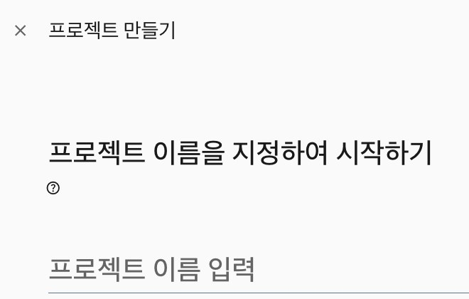
발견할 점
- 파이어베이스 프로젝트를 내가 직접 만들 수 있다
- 프로젝트를 만들면 그 안에 GA도 연동할 수 있다
실습4-3. 프로젝트 화면 둘러보기: 제미나이, 사이드 메뉴, 요금제
프로젝트 첫 화면에서 제미나이가 앱에 맞는 파이어베이스 서비스를 추천해 주는 카드를 봐요.
위쪽 프로젝트 이름 옆 목록에서 내 프로젝트가 맞는지 확인하고 들어가요.
왼쪽 사이드 메뉴를 꼭 확인해요. 데이터베이스 및 스토리지, 보안, AI 서비스, 호스팅 및 서버리스, 애널리틱스가 여기 있어요.
프로젝트 이름 옆에 Spark 요금제라고 보이는지 확인해요. 무료 요금제로 시작한다는 뜻이에요.
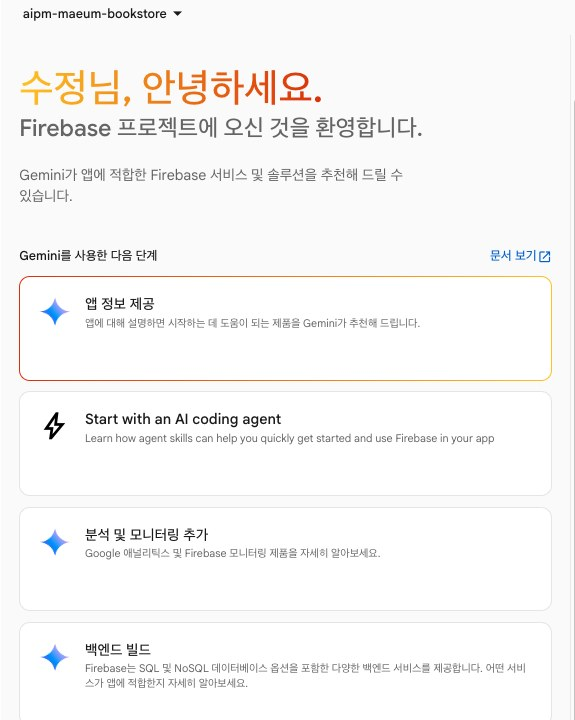
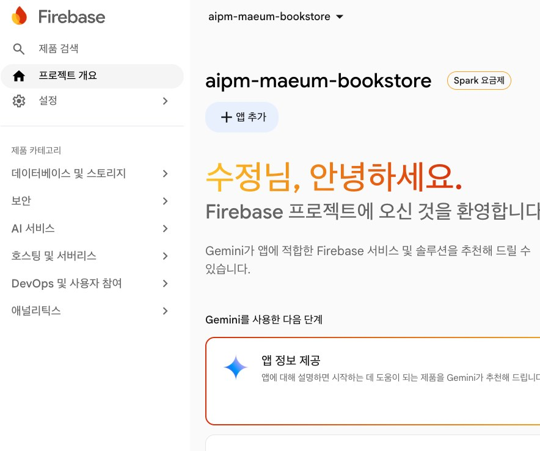
실습4-4. 웹 앱 등록하고 설정 복사하기
프로젝트를 만들었다고 바로 연결되는 것은 아니에요. 처음에는 프로젝트만 있고 앱은 하나도 등록되지 않은 상태예요. 웹 앱을 하나 등록해요.
프로젝트 첫 화면에서 [+ 앱 추가] → 웹(</> 모양)을 눌러요.
앱 닉네임을 넣어요. 예:
프로젝트이름-web. 닉네임은 콘솔 안에서만 보이고 나중에 바꿀 수 있어요.'이 앱의 Firebase 호스팅도 설정'에 체크하고 [앱 등록]을 눌러요.
다음 화면에 나오는
firebaseConfig설정 코드를 복사해 둬요.
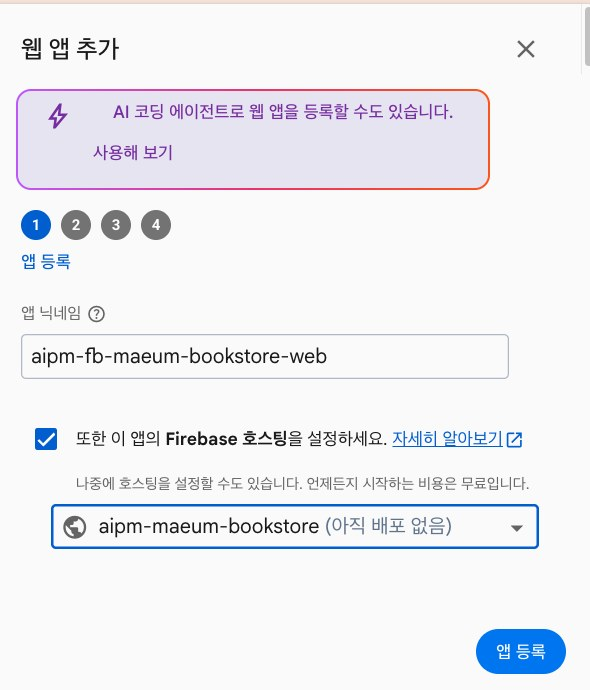
웹 앱 설정에 든 apiKey는 파이어베이스 프로젝트를 알아보는 이름표예요. 파이어베이스 문서는 파이어베이스용 API 키는 비밀로 다루지 않아도 되고 코드에 넣어도 된다고 안내해요. 데이터는 이 키가 아니라 보안 규칙으로 지켜요. 다만 이 설정 말고 '서비스 계정 키' 같은 파일은 절대 코드나 대화창에 넣지 않아요.
출처: Firebase 문서 Learn about using and managing API keys for Firebase("API keys restricted to Firebase services do not need to be treated as secrets") (2026-11-13 확인)
실습4-5. 클로드 코드에게 다음 단계를 맡기기
마음책방 폴더를 연 클로드 코드로 돌아와요.
요청: 파이어베이스 콘솔에서 프로젝트와 웹 앱을 만들었어. 마음책방을 파이어베이스 호스팅으로 배포하려면 다음에 뭘 해야 하는지 알려 주고, 순서대로 실행해 줘. 내용: 프로젝트 ID는 [내 프로젝트 ID]이고, 웹 앱 설정은 아래와 같아. 실행하기 전에 할 일 목록을 먼저 보여 줘. [복사한 firebaseConfig 붙여 넣기] 형식: ① 할 일 목록 ② 각 단계에서 내가 해야 할 일(로그인 등) ③ 배포된 주소를 한 줄씩.
클로드 코드는 할 일 목록을 만들고 하나씩 실행해요. 중간에 이런 것을 물어볼 수 있어요.
| 클로드 코드가 묻는 것 | 뜻과 정하는 법 |
|---|---|
| public 폴더로 파일을 옮겨도 될까요? | 파이어베이스는 정해 둔 폴더의 파일을 배포해요. 옮기면 깃헙 페이지스(맨 위 폴더 기준)에서는 더 이상 열리지 않아요. |
| 깃헙 페이지스를 끌까요? | 두 주소가 같이 열려 있으면 검색엔진이 같은 페이지가 두 개라고 볼 수 있어요. 파이어베이스 주소를 정식 주소로 쓸 거면 "기존 깃헙 페이지스는 끄고, 파이어베이스로 연동할 수 있게 해 줘"라고 답해요. |
| 파이어베이스에 로그인해 주세요 | 브라우저가 열리면 4-2에서 프로젝트를 만든 구글 계정으로 로그인하고 허용해요. |
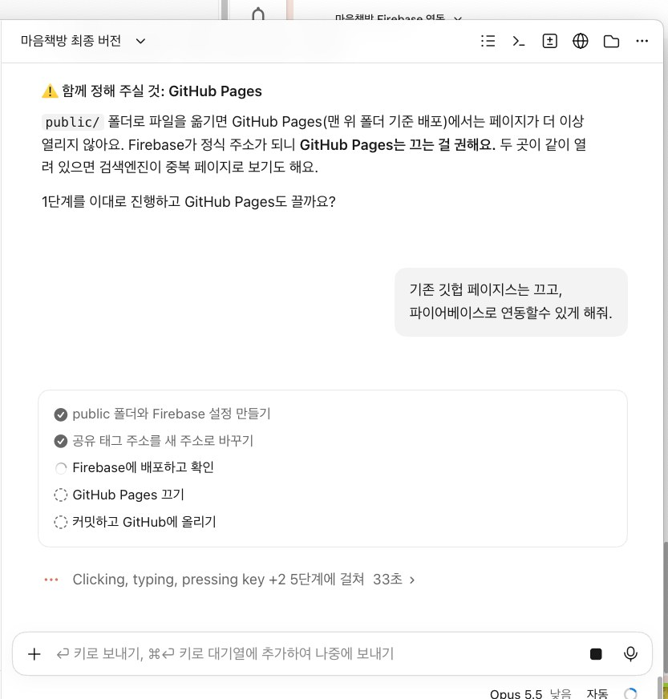
막히면
| 이렇게 보이면 | 이렇게 해요 |
|---|---|
| firebase 명령을 찾을 수 없어요 | 파이어베이스 명령 도구가 없어요. 클로드 코드에게 "파이어베이스 명령 도구를 설치해 줘. 설치 명령은 실행하기 전에 보여 줘"라고 해요. 노드제이에스가 필요하다고 하면 어제 4-9에서 확인한 결과를 떠올려요. |
| 콘솔 화면에서 무엇을 눌러야 할지 모르겠어요 | 크롬에서 클로드(Claude in Chrome)를 켜고 "지금 이 화면에서 무엇을 해야 할까?"라고 물으면 화면을 읽고 알려 줘요. |
실습4-6. 파이어베이스 주소 열어 보고, 깃헙 페이지스 주소와 비교하기
클로드 코드가 알려 준
프로젝트이름.web.app주소를 열어요. 마음책방이 열리면 성공이에요. 예: aipm-maeum-bookstore.web.app(강사 예시)2세션에서 만든 깃헙 페이지스 주소를 다시 열어요. 깃헙 페이지스를 껐다면 더 이상 열리지 않는 것을 확인해요.
3-2에서 넣은 공유 썸네일 주소도 새 주소로 바뀌었는지 클로드 코드에게 확인해요.
확인할 점
- web.app 주소에서 마음책방이 열린다
- 깃헙 페이지스 주소는 더 이상 열리지 않는다
선택4-7. 더 해 보기: 데이터베이스와 구글 로그인
먼저 끝난 사람은 같은 파이어베이스 프로젝트에 기능을 하나 더 붙여 봐요.
요청: 마음책방에 [파이어베이스 데이터베이스 연동 / 파이어베이스 구글 로그인] 기능을 붙여 줘. 내용: 지금 파이어베이스 프로젝트를 그대로 써 줘. 콘솔에서 내가 켜야 할 것이 있으면 먼저 알려 줘. 스파크(무료) 요금제 안에서 할 수 있는지도 확인해 줘. 형식: ① 내가 콘솔에서 할 일 ② 바꾼 파일 목록 ③ 확인하는 방법을 한 줄씩.
결과4-8. 결과
이렇게 보이면 성공web.app 주소에서 마음책방이 열리고, 깃헙 페이지스 주소는 열리지 않는다
3주차 회고와 다음 주 예고
이번 주에 만든 결과물을 한곳에 모으고, 데이터를 모으는 일에서 AI를 붙이는 일까지 어떻게 이어졌는지 돌아봐요.
회고5-1. 3주차 결과물 모으기와 회고
STEP 1. 결과물 링크 모으기
빈 템플릿3주차 결과물
| 요일 | 만든 것 | 링크 | 이 일에서 배운 규칙 한 줄 |
|---|---|---|---|
| 월 | 신청 명단 시트 · 입력 화면 · 정리본 · GA 실시간 보고서 | ||
| 화 | 책 1,000권 원본·정리본 시트 · 클로드로 받은 CSV | ||
| 수 | 감정 → 책 3권 카드 Hello 페이지 | ||
| 목 | 관리자 페이지가 있는 마음책방 · 로컬에서 연 헬로 페이지·마음책방 | ||
| 금 | 클로드 코드로 올린 저장소 · 깃헙 페이지스 주소 · 보안 점검 이슈 · 파이어베이스 주소 |
STEP 2. 세 가지 질문에 답하기
- 이번 주에 모은 데이터 가운데, 내 서비스 기획에 가장 먼저 쓰고 싶은 것은 무엇인가요?
- AI가 틀릴 수 있어서 내가 넣은 장치(검색 주소, '확실한 만큼만', 개인정보 금지 규칙 등)는 무엇이었나요?
- 마음책방이 아니라 새 주제를 고른다면, 이번 주에 만든 것 가운데 어떤 조합으로 무엇을 만들고 싶나요?
STEP 3. 다음 주 예고
다음 주 월요일에는 이번 주에 못 한 챗봇 만들기를 클로드 코드로 해요. 그다음 챗봇에 AI를 붙이고, 내 문서에서 답을 찾아 읽고 답하는 RAG와, AI가 스스로 도구를 골라 일을 이어 가는 에이전트(Agent)를 배워요. 4주차 홈에서 미리 볼 수 있어요.
CI/CD 맛보기: 개발 과정을 자동으로
2세션에서 코드를 올리면 1~2분 뒤 사이트가 저절로 바뀌었어요. 그 뒤에서 일한 것이 깃헙 액션이에요. 액션이 어디에 있고 무엇을 하는지 보고, 깃헙 페이지스·파이어베이스 배포를 수동과 자동으로 나란히 비교해요.
개념6-1. CI/CD란?
빵집에 비유해 볼게요. 반죽(코드)을 넣으면 컨베이어가 알아서 굽고(빌드), 탄 빵은 골라내고(검사), 통과한 빵만 진열대에 올려요(배포). 사람은 반죽만 잘 만들면 돼요.
| 말 | 뜻 | 빵집에서는 |
|---|---|---|
| CI (지속적 통합) | 코드를 올릴 때마다 자동으로 합치고 검사해요. | 반죽이 들어오면 바로 굽고 탄 빵을 골라내요 |
| CD (지속적 배포) | 검사를 통과하면 자동으로 사이트에 내보내요. | 통과한 빵을 바로 진열대에 올려요 |
| 깃헙 액션 | 깃헙에서 이 자동 과정을 실행해 주는 기능이에요. | 컨베이어 벨트 |
개념6-2. 깃헙 액션은 어디에 있고, 무엇을 하나요?
메뉴 위치 · 깃헙 저장소를 열면 저장소 이름 아래에 탭이 한 줄로 있어요. Code · Issues · Pull requests · Actions · Projects · Settings … 가운데 [Actions] 탭이에요. 계정 메뉴가 아니라 저장소마다 있어요.
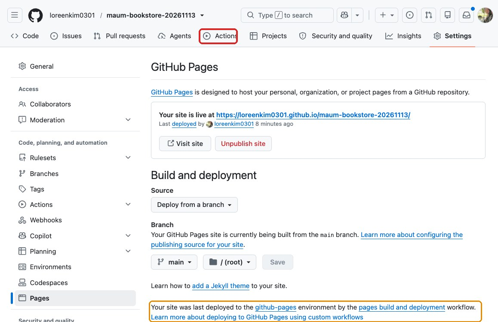
| 말 | 뜻 | 마음책방에서는 |
|---|---|---|
| 워크플로 | 자동으로 실행할 일의 순서표예요. 저장소의 .github/workflows 폴더에 파일로 있어요. | 깃헙 페이지스를 켜면 깃헙이 'pages build and deployment' 워크플로를 알아서 써요 |
| 이벤트(트리거) | 워크플로를 시작하게 하는 일이에요. 푸시, PR, 정해진 시간, 손으로 누르기가 있어요. | main에 푸시하면 시작돼요 |
| 잡 · 스텝 | 잡은 한 컴퓨터에서 실행할 일 묶음, 스텝은 그 안의 한 단계예요. 스텝은 순서대로 실행돼요. | 파일 준비 → 묶기 → 배포 |
| 러너 | 워크플로를 실제로 실행하는 깃헙의 컴퓨터예요. | 내 컴퓨터가 꺼져 있어도 깃헙 컴퓨터가 배포해요 |
| 실행 기록 | Actions 탭에 실행마다 한 줄씩 남아요. 초록 체크는 성공, 빨간 X는 실패예요. 누르면 단계별 기록(로그)이 보여요. | 어느 커밋이 언제 배포됐는지 확인해요 |
비용 · 공개 저장소에서 깃헙의 기본 러너를 쓰면 무료예요. 비공개 저장소는 무료 계정에 매달 정해진 사용량이 들어 있고, 넘으면 비용이 생겨요.
출처: GitHub Docs Understanding GitHub Actions(workflow·event·job·step·runner, .github/workflows) · GitHub Actions billing(공개 저장소 기본 러너 무료) · Configuring a publishing source("Your GitHub Pages site will always be deployed with a GitHub Actions workflow run.") (2026-11-13 확인)
실습6-3. 액션 탭에서 깃헙 페이지스 배포 기록 보기
2세션에서 깃헙 페이지스를 켰던 마음책방 저장소를 열고 위쪽 [Actions] 탭을 눌러요.
목록에서 'pages build and deployment' 실행 기록을 찾아요. 줄마다 커밋 메시지와 시각이 보여요.
한 줄을 눌러 build, deploy 단계와 걸린 시간을 봐요.
빨간 X가 있으면 그 줄의 기록을 열어 클로드 코드에게 보여 주고 "이 배포가 왜 실패했는지 알려 줘"라고 물어요.
| 기록에서 알 수 있는 것 | 내 결과 |
|---|---|
| 어떤 커밋 메시지가 배포되었나 | |
| 성공했나(초록 체크 / 빨간 X) | |
| 몇 초 걸렸나 |
1-8에서 커밋 메시지를 내가 읽을 수 있게 정해 둔 덕분에, 이 목록만 봐도 무엇이 언제 배포됐는지 알 수 있어요.
막히면
| 이렇게 보이면 | 이렇게 해요 |
|---|---|
| Actions 탭에 기록이 하나도 없어요 | 4세션에서 깃헙 페이지스를 껐다면 새 기록이 생기지 않아요. 지난 기록이 남아 있는지 아래로 내려 봐요. |
개념6-4. 세 가지 배포 흐름 비교하기
앞의 네 단계는 셋 다 같아요. 마지막 '배포'를 누가 하느냐가 달라요.
① 깃헙 페이지스 자동
- 1. 로컬 소스코드내 컴퓨터 폴더
- 2. 클로드 코드로 편집diff 보고 승인
- 3. 로컬 깃에 버전 관리커밋
- 4. 깃헙에 푸시git push
- 5. 깃헙 페이지스 배포깃헙 액션이 저절로누가: 깃헙(pages build and deployment)
푸시하면 끝. 깃헙의 코드와 사이트가 늘 같아요. 단, 무료 계정은 공개 저장소에서만 써요.
② 파이어베이스 수동
- 1. 로컬 소스코드내 컴퓨터 폴더
- 2. 클로드 코드로 편집diff 보고 승인
- 3. 로컬 깃에 버전 관리커밋
- 4. 깃헙에 푸시git push
- 5. 파이어베이스 배포내 컴퓨터에서 배포 명령누가: 나(클로드 코드에게 "배포해 줘")
푸시와 배포가 따로예요. 배포를 깜빡하면 깃헙에는 새 코드, 사이트에는 옛날 화면이 남아요. 4세션에서 한 방식이에요.
③ 파이어베이스 + 깃헙 액션 자동
- 1. 로컬 소스코드내 컴퓨터 폴더
- 2. 클로드 코드로 편집diff 보고 승인
- 3. 로컬 깃에 버전 관리커밋
- 4. 깃헙에 푸시git push
- 5. 파이어베이스 배포깃헙 액션이 저절로누가: 깃헙(내가 만든 워크플로 + 시크릿)
①처럼 푸시하면 끝이고, 비공개 저장소에서도 돼요. 처음에 워크플로 파일과 파이어베이스 열쇠(시크릿)를 한 번 준비해야 해요.
| 비교 | ① 깃헙 페이지스 | ② 파이어베이스 수동 | ③ 파이어베이스 + 액션 |
|---|---|---|---|
| 배포를 누가 하나 | 깃헙 | 나 | 깃헙 |
| 깃헙 코드와 사이트가 같은가 | 늘 같아요 | 배포를 잊으면 달라요 | 늘 같아요 |
| 배포 기록 | Actions 탭 | 내 컴퓨터 터미널에만 | Actions 탭 |
| 비공개 저장소 | 무료 계정은 안 돼요 | 돼요 | 돼요 |
| 처음 준비 | Pages 설정만 | 파이어베이스 명령 도구 | 워크플로 파일 + 깃헙 시크릿 |
선택6-5. ②를 ③으로 바꿔 보기: 파이어베이스 자동 배포
4세션에서 만든 파이어베이스 배포를 깃헙 액션으로 자동화해요. 파이어베이스 명령 도구에는 깃헙 액션 연결을 대신 만들어 주는 명령이 있어요.
요청: 마음책방을 깃헙 main에 푸시하면 깃헙 액션이 파이어베이스 호스팅에 자동으로 배포하게 해 줘. 내용: 파이어베이스 공식 방법(firebase init hosting:github)을 써 줘. 열쇠는 코드에 넣지 말고 깃헙 시크릿에만 넣어 줘. 실행하기 전에 할 일 목록을 먼저 보여 줘. 형식: ① 할 일 목록 ② 내가 브라우저에서 해야 할 일 ③ 만들어진 워크플로 파일 이름과 시크릿 이름을 한 줄씩.
브라우저가 열리면 깃헙 계정으로 로그인하고 연결을 허용해요. 저장소 관리자 권한이 있어야 해요.
저장소 → [Settings] → [Secrets and variables] → [Actions]에 파이어베이스 시크릿이 생겼는지 봐요. 값은 보이지 않고 이름만 보이면 정상이에요.
첫 화면 글자 하나를 고쳐 커밋하고 푸시해요. [Actions] 탭에 새 실행 기록이 생기고, 초록 체크가 뜬 뒤 web.app 주소에 바뀐 글자가 보이면 성공이에요.
출처: Firebase 문서 Deploy to live & preview channels via GitHub pull requests(firebase init hosting:github: 서비스 계정 생성, 키를 깃헙 시크릿으로 업로드, 워크플로 파일 작성, 저장소 관리자 권한 필요) (2026-11-10 갱신, 2026-11-12 확인)
결과6-6. 결과
이렇게 보이면 성공Actions 탭에서 배포 기록을 찾아 커밋·성공 여부·시간을 말하고, ②와 ③의 차이를 "배포를 누가 하나"로 설명할 수 있다
오늘 정리와 과제
오늘의 규칙
- 명령은 클로드 코드에게 맡기되, 실행 전에 무엇을 하는 명령인지 읽고 승인한다
- 커밋 메시지는 내가 읽고 바로 알 수 있게 쓴다. 커밋 메시지와 날짜로 무엇이 언제 바뀌었는지 확인한다
- 무료 깃헙의 깃헙 페이지스는 공개 저장소에서만 쓸 수 있다. 공개로 바꾸기 전에 비밀 값과 개인정보를 찾는다
- 배포한 뒤에는 되는 기능은 되는 이유를, 안 되는 기능은 안 되는 이유를 확인한다
- 찾은 문제는 바로 다 고치지 않고 깃헙 이슈에 목록으로 남긴다
- 파이어베이스 웹 앱 설정은 코드에 넣어도 되지만, 서비스 계정 키·토큰은 코드와 대화창에 넣지 않는다
마음책방 깃헙 저장소 + 깃헙 페이지스 주소 + 보안 점검 이슈 + SEO를 고친 마음책방 + 파이어베이스 주소(web.app) + 3주차 결과물 표
파이어베이스 주소를 가족이나 동료 한 명에게 카카오톡으로 보내 열어 보게 하고, 마음책방에서 고치고 싶은 점 하나를 받아 와요. 받은 의견은 내 저장소의 깃헙 이슈로 남겨요.